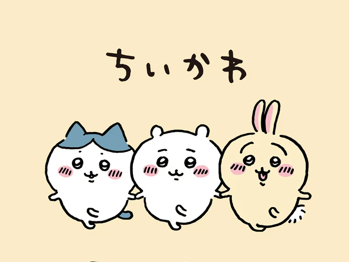
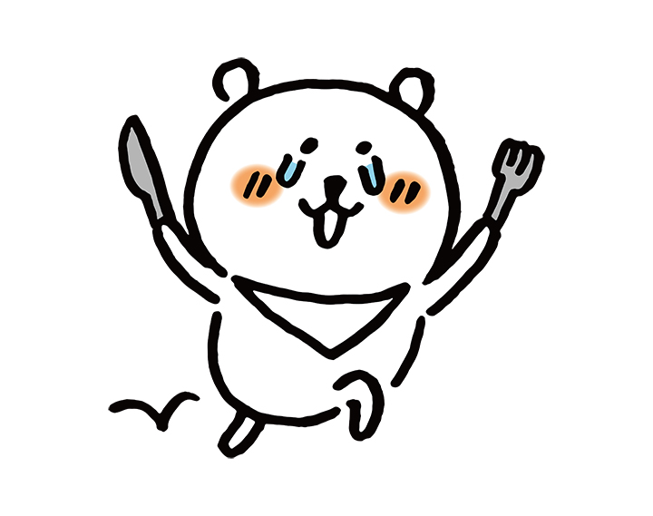
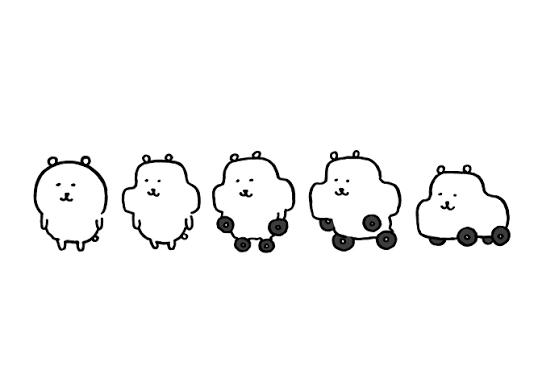

헷갈리는 사람들 필독!
"농담곰, 다른 애들과 뭐가 달라?"
하얀 얼굴에 귀여운 눈코입, 비슷해보이지만 달라요
🐹🐾
🚨 유사 캐릭터 주의!
치이카와/타 캐릭터
-
 ⚠️ 가나디: 귀가 크고 처짐, 중안부가 긺
⚠️ 가나디: 귀가 크고 처짐, 중안부가 긺 -

⚠️ 치이카와: 햄스터임. 농담곰보다 작음. 농담곰 작가가 만들었지만 엄연히 다른 캐릭터
"실루엣은 비슷해도 매력은 완전히 다르답니다!"
🐻🍙
농담곰 (Nagano Bear)
매력덩어리 농담곰
- 👉 감정표현이 풍부해요
-
👉 맛있는 걸 좋아해요. 눈물을 흘리기도 해요.

-
👉 상상하는 대로 다양하게 변신!

"농담월드에 오신걸 환영합니다~"